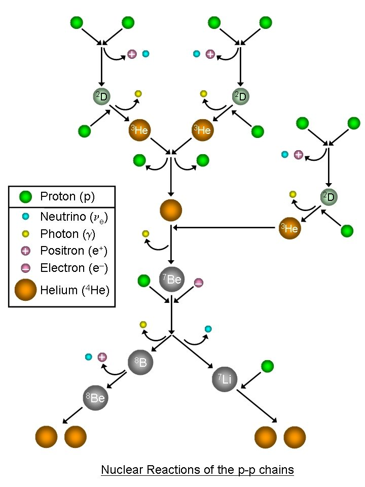
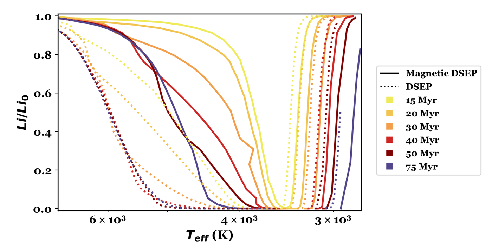
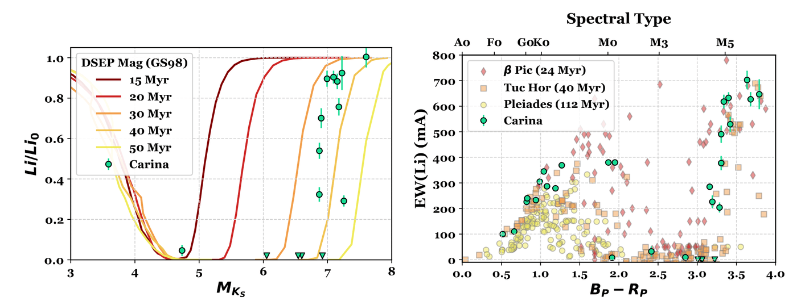
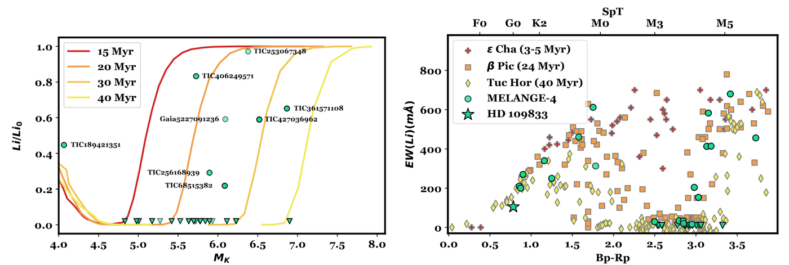

Age is a fundamental parameter of a star, and key to understand and characterize a star's evolution. However, it is one of the hardest parameters to measure. Stars don't come with birth certificates and there is no way to measure a star's age directly.
Lithium is destroyed in stellar interiors at ~2.5 million Kelvin. This seems high, but proton-proton fusion requires almost 10 million Kelvin. The most common situation is a lithium atom being hit by a high-energy proton producing beryllium, which promptly decays into two helium nuclei (see the bottom-right of the PP chain diagram). Lithium levels in the star are depleted over time as it is transported into the hot core. The rate of this lithium depletion depends on the star's properties, but for a star of fixed mass, lithium is a reliable age indicator for young stars.

Lithium measurements are especially useful in low-mass stars because they are fully convective. This means lithium is rapidly depleted throughout the whole star - not just in the core. The cores of the coolest stars are hot enough to burn lithium at this age (they are not yet on the main sequence), which creates a boundary between stars with little to no lithium and those with roughly primordial levels of lithium. This is commonly called the lithium depletion boundary. As low-mass stars fall onto the main-sequence, their cores heat up. The lithium boundary therefore shifts to cooler temperatures, providing a direct constraint on the age of a stellar association.

Lithium levels (compared to initial levels) as a function of temperature and age (color). The dashed and solid lines refer to different models - one including the effect of magnetic fields and one without. The sharp rise in lithium levels in cool stars is the lithium depletion boundary. Unlike the slow rise on the warmer end, the boundary provides an extremely precise age from 10 to 100 Myr. The method works at older ages, although it means measuring lithium in brown dwarfs, which is more challenging. Lithium depletion ages are also less sensitive to the choice of models. Plot from Mackenna Wood's Ph.D. Thesis.
The Carina Stellar Association is one of the closest stellar associations to Earth, and yet measurements of its age have varied from 13 to 45 Myr. In Wood et al. 2023b, we measured the lithium depletion boundary of Carina, yielding an age of 41 Myr (with about 10% uncertainties). See the plot below.

In another paper led by Mackenna Wood (Wood et al. 2023a) we discovered a nearby (~85 pc), young (27±3 Myr), distributed stellar population near Lower Centaurus Crux (LCC). We identified this group by searching for stars comoving with a candidate transiting planet from TESS (HD 109833; TOI 1097). In addition to confirming the planet, we measured the lithium depletion boundary for the group. We named this group MELANGE-4.
